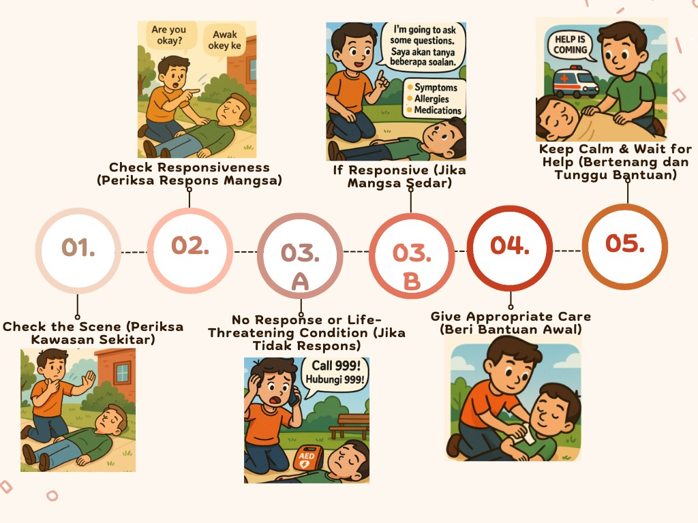

Be calm. Act fast. Save lives.
Every second counts in an emergency. These simple first aid tips can help you care for injuries before professional help arrives.
First Aid Tips
1. Check the Scene (Periksa Kawasan Sekitar)
EN: Ensure the area is safe for you and the victim.
BM: Pastikan kawasan selamat untuk anda dan mangsa.
2. Check Responsiveness (Periksa Respons Mangsa)
EN: Tap and shout: “Are you okay?”
Check for breathing and signs of life – max 10 seconds
BM: Tepuk dan jerit: “Awak okay ke?”
Periksa nafas dan tanda hayat – maksimum 10 saat
3A. No Response or Life-Threatening Condition (Jika Tidak Respons)
EN: Call 999 and get AED (if available). Begin CPR immediately.
BM: Hubungi 999 dan dapatkan AED (jika ada). Mula CPR segera.
3B. If Responsive (Jika Mangsa Sedar)
EN: Interview using SAM:
- Symptoms
- Allergies
- Medications/Medical History
Don’t move the victim if spinal injury is suspected.
BM: Tanya soalan guna teknik SAM:
- Simptom
- Alergi
- Medikal/ubat-ubatan
Jangan gerakkan mangsa jika disyaki kecederaan tulang belakang.
4. Give Appropriate Care (Beri Bantuan Awal)
EN: Provide care according to the situation and your level of training.
BM: Beri pertolongan ikut keadaan dan tahap latihan anda.
5. Keep Calm & Wait for Help (Bertenang dan Tunggu Bantuan)
EN: Reassure the person and stay with them until EMS arrives.
BM: Tenangkan mangsa dan tunggu sehingga bantuan tiba.